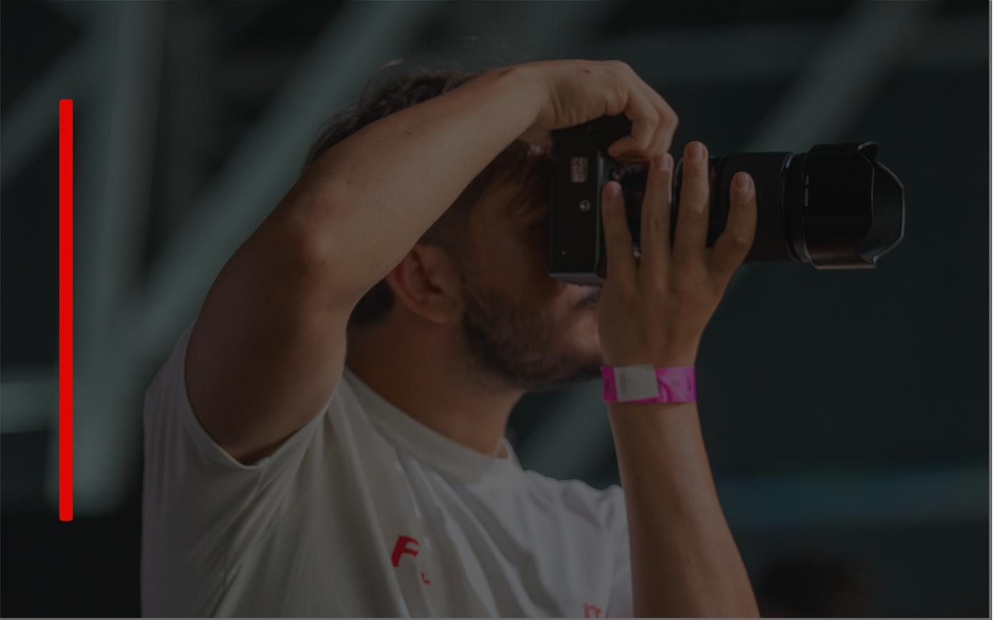
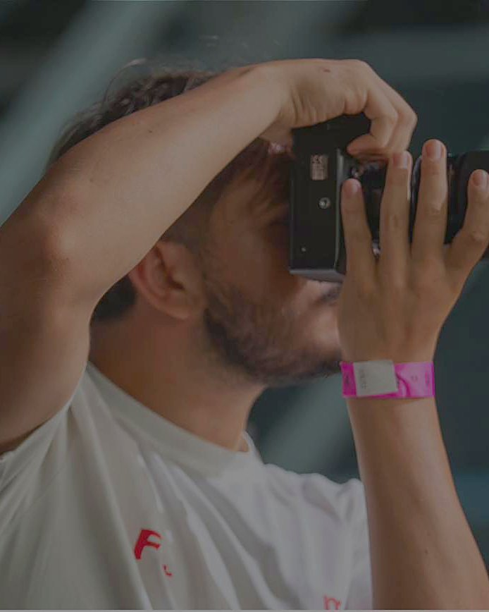

Il mondo attraverso la mia lente
Scopri la mia visione
Non una semplice gallery. Ogni progetto ha il suo spazio.
Scrolla tra i miei lavori e scoprine i dettagli uno per uno.
Progetti.
Clicca su un progetto per entrare nella pagina dedicata.



Foto e movimento, nello stesso linguaggio visivo.
Sono Gianluca e creo contenuti fotografici e video con particolare attenzione allo sport, agli eventi e alla comunicazione digitale.
Questo portfolio è pensato per mettere il lavoro davanti a tutto: immagini, video e progetti semplici da navigare.
Il lavoro non resta solo qui dentro.
Negli ultimi 90 giorni i contenuti che ho realizzato hanno raggiunto milioni di persone. Sono numeri veri, presi dagli Insight, aggiornati regolarmente.
Multimedia.
Sport Photography
Partite, tornei, squadre, atleti e backstage.
↗Video & Reels
Highlight, montaggi verticali e contenuti dinamici.
↗Portrait & Editorial
Ritratti e contenuti per personal branding.
↗Events & Brand Content
Copertura completa foto + video per eventi e campagne.
↗Riprese e foto con Drone
Eventi, panoramiche e molto altro
↗Hanno lavorato con me.
Esperienze e feedback di atleti, professionisti, creator, organizzazioni e clienti con cui ho collaborato.
Facciamolo vedere.
Contattami per fotografie, video, eventi e collaborazioni.